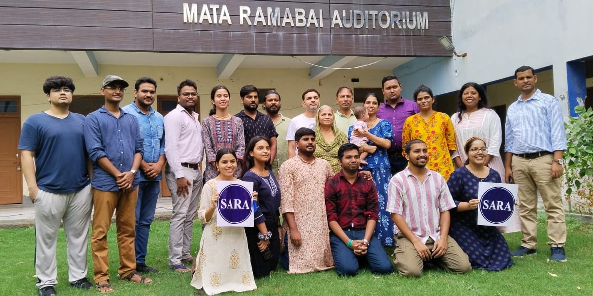
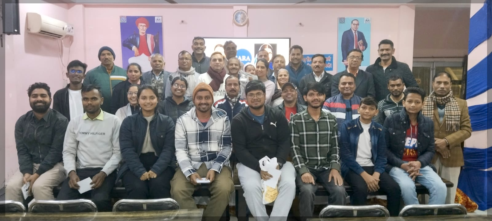

Annihilation of Caste
SARA Book Club - Session 2
July 8, 2026
Disclaimer
This presentation has been prepared for the SARA Book Club - Session 2 as part of an internal academic discussion on Annihilation of Caste by Dr. B.R. Ambedkar.
Caste is a sensitive and deeply personal subject. All views expressed during this session are those of individual participants and do not represent the official position of SARA or any of its affiliated persons or programmes. SARA bears no responsibility for opinions shared in the course of this discussion.
All participants are requested to engage with kindness, respect, and restraint. Language that is provocative, discriminatory, or hurtful toward any community, caste, or individual has no place in this space and will not be encouraged.
The primary purpose of this session is academic and pedagogical - to identify the key arguments, ideas, and lessons from Dr. Ambedkar’s work that can be meaningfully and sensitively introduced to students in the SARA Bridge Course Level 1.
We enter this discussion in the spirit of learning, not of debate or confrontation.
Thank you!

Savitribai Phule (1831-1897)
🌺 🙏🏽🌼


Ramabai Ambedkar (1898-1935)
🌺 🙏🏽🌼
Savitribai Ramabai (SARA) Institute of Data Science, Sonipat
About SARA
An Ambedkarite Non-profit Educational Institute
- Provide low-cost data science education
- Priority admission for marginalised communities & women
- Prevent data injustice
SARA website: https://sara-edu.netlify.app/
SARA Data Schools





3rd SARA Summer School
Bridge Course Level 1
Offline three months course covering essential education (6 to 8 class):
- Social Science
- Science
- Geography
- History
- English Language
- Environmental Science
- Mathematics
- General Knowledge
- Civics, polity & political economy
- Computer & AI
SARA Book Club
Follow SARA WhatsApp Channel
Preface to the Second Edition, 1937
Besides Mr. Gandhi, many others have adversely criticised my views as expressed in my speech. But I have felt that in taking notice of such adverse comments, I should limit myself to Mr. Gandhi. This I have done not because what he has said is so weighty as to deserve a reply, but because to many a Hindu he is an oracle, so great that when he opens his lips it is expected that the argument close and no dog must bark. (page 185)
Preface to the Second Edition, 1937
I shall be satisfied if I make the Hindus realise that they are the sick men of India, and that their sickness is causing danger to the health and happiness of other Indians. (page 185)
Jat-Pat Todak Mandal Conference
You are entitled to say that my analysis is wrong. But you cannot say that in an address which deals with the problem of caste it is not open to me to discuss how caste can be destroyed. (page 200)
I cared more for my faith than for any honour from you. (page 201)
This is I believe the first time when the appointment of a president is cancelled by the reception committee because it does not approve of the views of the president. (page 204)
Annihilation of Caste
An Undelivered Speech, 1936 | Part 1
Babasaheb:
I have criticised the Hindus. I have questioned the authority of the Mahatma whom they revere. They hate me. To them I am a snake in their garden. (para 1.1)
Hindu Caste Order
Savarna: “those with varna, a caste Hindu; a term used for those within the fourfold varna system. A Shudra is also a savarna.”
Dwija: “twice born” … “the first three groups are considered dwija” (page 209, foote-note 4 & 5)
Image source: britannica.com
Hindu Caste Order
Antyaja = Avarna = last born = an untouchable = Dalit
“those outside the pale of the fourfold varna system” (page 209, foot-note 3)
Image source: britannica.com
Babasaheb:
Yours is a cause of social reform. That cause has always made an appeal to me (para 1.4)
Part 2
Social Reform First
Babasaheb:
Social reform in India has few friends and many critics. (para 2.1)
Babasaheb:
It was at one time recognised that without social efficiency, no permanent progress in the other fields of activity was possible; that owning to mischief wrought by evil customs, Hindu society was not in a state of efficiency (para 2.2)
Important
Social efficiency: “for [John] Dewey and Ambedkar social efficiency lies in the individual being able to choose and develop his/her competencies to the fullest and thus mindfully contribute to the functioning of society.” (page. 210, foot-note 6)
Babasaheb:
the birth of the National Congress was accompanied by the foundation of the Social Conference (para 2.2)
The point at issue was whether social reform should precede political reform. (para 2.3)
in the course of time the party in favour of political reform won, and the Social Conference vanished and was forgotten (para 2.5)
Babasaheb:
Treatment of the Untouchables under Peshwas
Untouchable was not allowed to use the public streets if a Hindu was coming along, lest he should pollute the Hindu by his shadow. The Untouchable was required to have black thread either on his wrist or around his neck, as a sign or a mark to prevent the Hindu from getting themselves polluted by his touch by mistake. In Poona, the capital of the Peshwa, the Untouchable was required to carry, strung from his waist, a broom to sweep away from behind himself the dust he trod on, lest a Hindu walking on the same dust should be polluted. In Poona, the Untouchable was required to carry an earthen pot hung around his neck wherever he went - for holding his spit, lest spit falling on the earth should polluted a Hindu who might unknowingly happen to tread on it. (para 2.8)
Babasaheb:
Are you fit for political power even though you do not allow a large class of your own countrymen like the Untouchables to use public schools? Are you fit for political power even though you do not allow them the use of public wells? Are you fit for political power even though you do not allow them the use of public streets? Are you fit for political power even though you do not allow them to wear what apparel or ornaments they like? Are you fit for political power even though you do not allow them to eat any food they like? (para 2.13)
Babasaheb:
Every congressman who repeats the dogma of Mill that one country is not fit to rule another country, must admit that one class is not fit to rule another class. (para 2.14)
Babasaheb:
Social Reform in Hindu family
reform of the high-caste Hindu family evils which prevailed among them and which were personally felt by them … widow remarriage, child marriage, etc. (para 2.15 & 2.16)
Babasaheb:
Social reform in Hindu Society
They did not stand up for the reform of Hindu society. The battle that was fought centered round the question of the reform of the family. It did not relate to social reform in the sense of the break-up of the caste system. It was never put in issue by the reformers. That is the reason why the “social reform party” lost. (para 2.15)
Babasaheb:
Social reform vs Political reform
the view that social reform need not precede political reform is a view which may stand only when by social reform is meant the reform of the family. That political reform cannot with impunity take precedence over social reform in the sense of the reconstruction of society (para 2.16)
the makers of political constitutions must take account of social forces (para 2.17)
Babasaheb:
The Communal Award
its significance lies in this: that political constitutions must take note of social organisation … The Communal Award is, so to say, the nemesis following upon the indifference to and neglect of social reform. (para 2.18)
The Communal Award
16 August 1932: “Granted separate electorates to minorities” including Depressed Classes/Untouchables
“The Congress and Gandhi opposed this, and Gandhi went on indefinite hunger strike in Poona jail.”
24 September 1932: Poona Pact - “the Untouchables were allotted reserved constituencies but not separate electorates” (page 220 foot-note 22)
Babasaheb:
Irish Home Rule
there was a social problem between Catholics [Southern Ireland] and Protestants [Ulster], which is essentially a problem of caste. (para. 2.19)
Irish Home Rule Movement
“to recover legislative independence from the Britain”
Catholics were more in numbers, largely living in the southern Ireland wanted Home Rule.
Protestants were less in numbers, but in majority in northern Ireland, Ulster, did not want Home Rule.
Babasaheb:
History of Rome
the republican constitution of Rome bore marks having strong resemblance to the Communal Award the constitution of republican Rome has to take account of the social division between the patricians and the plebeians, who formed two distinct castes (para. 2.20)
Ancient Rome
Patricians: old noble families who believed birth gave them the right to rule everything.
Plebeians: everyone else, who slowly and cleverly fought back and won most of their rights through collective action.
Secession of the Plebs: They walked out of Rome and sat on a hill outside the city saying - fine, run Rome without us. See how long your army lasts, your farms produce food, your city functions - without us.
This is AI created information.
Babasaheb:
To sum up, let political reformers turn in any direction they like, they will find that in the making of a constitution, they cannot ignore the problem arising out of the prevailing social order. (para 2.20)
Babasaheb:
history bears out the proposition that political revolutions have always been preceded by social and religious revolutions … emancipation of the mind and the soul is a necessary for the political expansion of the people (para 2.21)
Babasaheb:
Examples of Social & Religious Reform before Political Reform
The religious reformation started by Luther was the precursor of the political emancipation of the European people. (para 2.21)

Image source: By Lucas Cranach the Elder - GalleriX, Public Domain, https://commons.wikimedia.org/w/index.php?curid=23260036
Babasaheb:
Examples of Social & Religious Reform before Political Reform
In England, Puritanism led to the establishment of political liberty. Puritanism founded the new world. It was Puritanism which won the war of American independence, and Puritanism was a religious movement. (para 2.21)
Babasaheb:
Examples of Social & Religious Reform before Political Reform
The same is true of the Muslim empire. Before the Arabs became a political power, they had undergone a thorough religious revolution started by the Prophet Muhammad. (para 2.22)
Babasaheb:
Examples from India of Social & Religious Reform before Political Reform
The political revolution led by Chandragupta was preceded by the religious and social revolution of Buddha. (para 2.22)
The political revolution led by Shivaji was preceded by the religious and social reform brough about by the saints of Maharashtra.
The political revolution of the Sikhs was preceded by the religious and social revolution led by Guru Nanak. (para 2.22)
Part 3
Issues with Socialism
Babasaheb:
They1 propound that man is an economic creature, that his activities and aspirations are bound by economic facts, that property is the only source of power. They therefore preach that political and social reforms are but gigantic illusions, and that economic reform by equalisation of property must have precedence over every other kind of reform. (para 3.1)
Babasaheb:
religion is the source of power is illustrated by the history of India, where the priest holds sway over the common man often greater than that of the magistrate, and where everything, even such things as strikes and elections, so easily take a religious turn and can so easily be given a religious twist. (para 3.2)
Take the case of the plebeians of Rome as a further illustration of the power of religion over man. (para 3.3)
Babasaheb:
The question is, why did they1 fail in getting a strong plebeian to officiate as their consul? (para 3.4)
They agreed to elect another, less suitable to themselves but more suitable to the goddess - which in fact meant more amenable to the particians. Rather than give up religion, the plebeians gave up the material gain for which they had fought so hard. (para 3.6)
Babasaheb:
Men will not join in a revolution for the equalisation of property unless they know that after the revolution is achieved they will be treated equally, and that there will be no discrimination of caste and creed. (para 3.10)
He1 will be compelled to take account of caste after the revolution. if he does not take account of it before the revolution. This is only another way of saying that, turn in any direction you like, caste is the monster that crosses your path. You cannot have political reform, you cannot have economic reform, unless you kill this monster. (para 3.13)
Part 4
Babasaheb:
It is pity that caste even today has its defenders. … It is defended on the ground that the caste system is but another name for division of labour. … the caste system is not merely a division of labour. It is also division of labourers. … In no other country is the division of labour accompained by this gradation of labourers. (para 4.1)
Babasaheb:
But in no civilised society is division of labour accompanied by this unnatural division of labourers into watertight compartments. (para 4.1)
This division of labour is not spontaneous; it is not based on natural aptitudes. … but on that of the social status of the parents. (para. 4.2)
Babasaheb:
If a Hindu is seen to starve rather than take to new occupations not assigned to his caste, the reason is to be found in the caste system. (para 4.3)
The division of labour brought about by the caste system is not a division based on choice. Individual sentiment, individual preference, has no place in it. It is based on the dogma of predestination. (para 4.4)
Part 5
Pure Blood & Race
Babasaheb:
to treat different castes as though they were so many different races, is a gross perversion of facts. (para 5.2)
The caste system is a social division of people of the same race. (para 5.3)
Babasaheb:
A tree should be judged by the fruits it yields. If caste is eugenic, what sort of a race of men should it have produced? Physically speaking the Hindus are C3 people. They are a race of pygmies and dwarfs, stunted in stature and wanting in stamina. It is a nation nine-tenths of which is declared to be unfit for military service. This shows that the caste system does not embody the eugenics of modern scientists. It is a social system which embodies the arrogance and selfishness of a perverse section of the Hindus who were superior enough in social status to set it in fashion, and who had the authority to force it on their inferiors. (para 5.8)
Part 6
Hindu Society?
Babasaheb:
Hindu society is a myth. The name Hindu is itself a foreign name. (para 6.2)
There is an utter lack among the Hindus of what the sociologists call ‘consciousness of kind’. There is no Hindu consciousness of kind. In every Hindu the consciousness that exists is the consciousness of his caste. That is the reason why the Hindu cannot be said to form a society or a nation. (para 6.3)
Babasaheb:
similarity in certain things is not enough to constitute a society. (para 6.5)
Men constitute a society because they have things which they posses in common. … And the only way by which men can come to posses things in common with one another is by being in communication with one another. (para 6.6)
The caste system prevents common activity; and by preventing common activity, it has prevented the Hindus from becoming a society with a unified life and a consciousness of its own being. (para 6.7)
Part 7
Anti-social spirit
Babasaheb:
anti-social spirit is the worst feature of their own caste system (para 7.1)
An anti-social spirit is found wherever one group has ‘interests of its own’ which shut it out from full interaction with other groups, so that its prevailing purpose is protection of what it has got. (para 7.2)
The Hindus, therefore, are not merely an assortment of castes, but are so many warring groups, each living for itself and for its selfish ideal. (para 7.3)
Babasaheb:
the present-day non-Brahmin cannot forgive the present-day Brahmins for the insult their ancestors gave to Shivaji. (para 7.4)
The existence of caste and caste consciousness has served to keep the memory of past feuds between castes green, and has prevented solidarity. (para 7.4)
Part 8
Tribes
Babasaheb:
the fact still reamins that these aborigines have remained in their primitive uncivilised state in a land which boasts of a civilisation thousands of years old. (para 8.1)
Civilising the aborigines means adopting them as your own, living in their midst, and cultivitating fellow-feeling-in short, loving them. How is it possilbe for a Hindu to do this? His whole life is one anxious effort to preserve his caste. Caste is his precious possession which he must save at any cost. He cannot consent to lose it by establishing contact with the aborigines, the remnants of the hateful anarya of the Vedic days.
Part 9
Mean Hindus
Babasaheb:
higher-caste Hindus have deliberately prevented the lower castes who are within the pale of Hinduism from rising to the cultural level of the higher castes. (para 9.1)
- Sonars imitating Brahmins
- Widow remarriage in Pathare Prabhus
I have no hesitation in saying that if the Mahomedan has been cruel, the Hindus has been mean; and meaness is worse than cruelty. (para 9.4)
Part 10
Conversion
Babasaheb:
The real question is, why did the Hindu religion cease to be a missionary religion? (para 10.1)
the Hindu religion ceased to be a missionary religion when the caste system grew up among the Hindus. Caste is inconsistent with conversion. (para 10.2)
Hindu society being a collection of castes, and each caste being a closed corporation, there is no place for a convert. (para 10.3)
Part 11
Associated mode of living
Babasaheb:
The Hindu can derive no such strength. He cannot feel assured that his fellows will come to his help. Being one and fated to be alone, he remains powerless, develops timidity and cowardice, and in a fight surrenders or runs away. (para 11.2)
Among Skikhs and Muslims there is a social cement which makes them bhais. Among Hindus there is no such cement, and one Hindu does not regard another Hindu as his bhai. (para 11.3)
Indifferentism is the worst kind of disease that can infect a people. Why is the Hindu so indifferent? In my opinion this indifferentism is the result of the caste system, which has made sangthan and cooperation even for a good cause impossible. (11.4)
Part 12
Excommunication
Babasaheb:
The assertion by the individual of his own opinions and beliefs, his own independence and interest - over and against group standards, group authority, and group interests - is the beginning of all reform. (para 12.1)
Now a caste has an unquestioned right to excommunicate any man who is guilty of breaking the rules of the caste; (para 12.2)
Caste in the hands of the orthodox has been a powerful weapon for persecuting the reformers and for killing all reform. (para 12.4)
Part 13
Hindu’s Treason
Babasaheb:
A Hindu’s public is his caste. His responsibility is only his caste. His loyalty is restricted only to his caste. … There is no sympathy for the deserving. There is no appreciation of the meritorious. There is no charity to the needy. (para 13.1)
Have not Hindus committed treason against their country in the interests of their castes? (para 13.2)
Part 14
Ideal Society
Babasaheb:
If you ask me, my ideal would be a society based on liberty, equality, and fraternity. And why not? (para 14.1)
Babasaheb:
there must be social endosmosis. This is fraternity, which is only another name for democracy. … Democracy is not merely a form of government. It is primarily a mode of associated living of conjoint communicated experience. It is essentially an attitude of respect and reverence towards fellow men. (para 14.2)
Babasaheb:
liberty to choose one’s profession (para 14.3)
But to object to this kind of liberty is to perpetuate slavery. … It1 means a state of society in which some men are forced to accept from other the purposes which control their conduct. (para 14.4)
Babasaheb:
A man’s power is dependent upon (1) physical heredity; (2) social inheritance … (3) on his own efforts. (para 14.6)
It is obvious that those individuals also in whose favour there is birth, education, family name, business connections, and inherited wealth, would be selected in the race. But selection under such circumstances would not be a selection of the able. It would be the selection of the privileged. (para 14.6)
Part 15
Chaturvarnya
Babashaeb:
the protagonists1 of chaturvarnya take great care to point out that their chaturvarnya is based not on birth but on guna (worth). (15.1)
I do not understand why the Arya Samajists insist upon labelling men as Brahmin, Kshatriya, Vaishya and Shudra. (para 15.2)
Babasaheb:
names which are associated with a definite and fixed notion in the mind of every Hindu. The notion is that of a hierarchy based on birth. (para 15.3)
So long as these names continue, Hindus will continue to think of the Brahmin, Kshatriya, Vaishya and Shudra as hierarchical divisions of high and low; based on birth, and to act accordingly. (para 15.4)
Book Reference
Title Annihilation of Caste: The Annotated Critical Edition
Author B.R. Ambedkar
Contributor Arundhati Roy
Edition annotated
Publisher Verso Books, 2014
ISBN 1781688303, 9781781688304
Length 416 pages